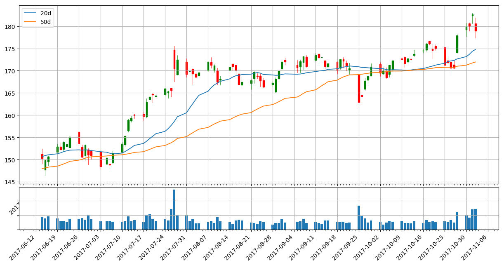
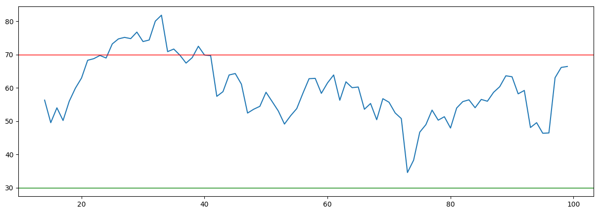
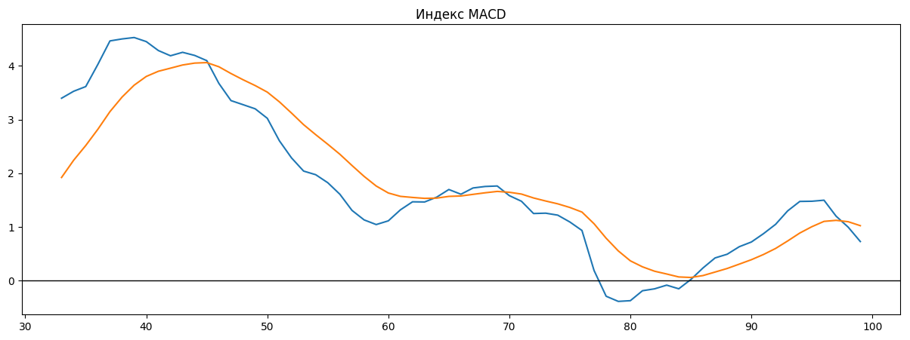
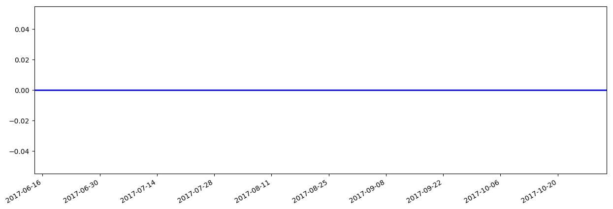

Основные фин.показатели:
| Баланс (квартал), в млн.USD | На 2017-06-30 | На 2017-03-31 | На 2016-12-31 | На 2016-09-30 | На 2016-06-30 |
|---|---|---|---|---|---|
| Всего текущих активов | 40,804.00 | 36,930.00 | 34,401.00 | 30,328.00 | 27,010.00 |
| Недвижимость/Имущество/Оборудование Всего | 14,668.00 | 13,032.00 | 11,803.00 | 10,778.00 | 9,756.00 |
| Всего активов | 73,843.00 | 68,714.00 | 64,961.00 | 59,674.00 | 55,739.00 |
| Общий долгосрочный долг | 0.00 | 0.00 | 0.00 | 0.00 | 0.00 |
| Всего обязательств | 7,362.00 | 6,526.00 | 5,767.00 | 5,559.00 | 5,356.00 |
| Общий капитал | 66,481.00 | 62,188.00 | 59,194.00 | 54,115.00 | 50,383.00 |
| Cash-flow (квартал), в млн.USD | 6 мес. 2017-06-30 | 3 мес. 2017-03-31 | 12 мес. 2016-12-31 | 9 мес. 2016-09-30 | |
| Поступления от операционной деятельности | 10,418.00 | 5,058.00 | 16,108.00 | 9,758.00 | |
| Поступления от инвестиционной деятельности | -11,331.00 | -5,891.00 | -11,739.00 | -9,764.00 | |
| Поступления от финансовой деятельности | -1,861.00 | -992.00 | -310.00 | 1,106.00 | |
| Чистый остаток денежных средств | -2,651.00 | -1,799.00 | 3,996.00 | 1,131.00 | |
| Доходы (квартал), в млн.USD | 3 мес. 2017-06-30 | 3 мес. 2017-03-31 | 3 мес. 2016-12-31 | 3 мес. 2016-09-30 | 3 мес. 2016-06-30 |
| Общий доход | 9,321.00 | 8,032.00 | 8,809.00 | 7,011.00 | 6,436.00 |
| Общие эксплуатационные расходы | 4,920.00 | 4,705.00 | 4,258.00 | 3,889.00 | 3,702.00 |
| Операционный доход | 4,401.00 | 3,327.00 | 4,551.00 | 3,122.00 | 2,734.00 |
| Чистая прибыль | 3,894.00 | 3,064.00 | 4,273.00 | 2,379.00 | 2,283.00 |
| Пониженная прибыли на акцию (EPS) без ЧС | 1.32 | 1.04 | 1.43 | 0.82 | 0.78 |
Последние финансовые новости: Показать все
| Дата | Заголовок | Источник |
|---|---|---|
| 2017-10-29 09:31 | Взгляд инвестора: взгляд на номера для Facebook, Inc. (NasdaqGS: FB) | finnewsweek |
| Facebook, Inc. (NasdaqGS: FB) имеет текущее значение EV или Enterprise 482424488. EV показывает, как рынок присваивает стоимость фирме в целом. EV, как правило, является модификацией рыночной капитализации, поскольку она включает в себя задолженность и денежные средства для оценки оценки фирмы. Отслеживание EV может помочь при сравнении компаний с различными структурами капитала. EV может помочь инвесторам лучше понять, недооценена ли компания или нет. В настоящее время ROIC в Facebook, Inc. (NasdaqGS: FB) составляет 0,965085. Среднее значение ROIC 5 лет составляет 0.666288, а отношение ROIC Quality равно 2.261905. ROIC - это коэффициент рентабельности, который измеряет доход, который генерирует инвестиции для тех, кто предоставляет капитал. ROIC помогает показать, насколько эффективно компания превращает капитал в прибыль. ROIC может быть хорошей мерой для просмотра при анализе того, сможет ли компания инвестировать разумно. ROIC также может быть важным показателем для инвестора с ценными бумагами, который пытается определить ров. Facebook, Inc. (NasdaqGS: FB) имеет текущий комбинированный показатель стоимости 73. Используя шкалу от 0 до 100, более низкая оценка будет представлять собой недооцененную компанию, а более высокий балл будет указывать на дорогостоящую или переоцененную компанию. Этот рейтинг был разработан Джеймсом О'Шонесси, используя шесть различных коэффициентов оценки, включая цену на балансовую стоимость, цену продажи, EBITDA EV, цену на денежный поток, цену на прибыль и доходность акционеров. Инвесторы, ищущие ценность на фондовом рынке, могут присматриваться к рангу Magic Formula или рейтингу MF для Facebook, Inc. (NasdaqGS: FB). В настоящее время у компании есть рейтинг MF 4281. Волшебная Формула была разработана и популярна Джоэлом Гринблаттом в его книге «Маленькая книга, которая бьет рынок». Формула Greenblatt помогает находить акции, которые привлекательно оцениваются с высокой доходностью дохода или сильной прибылью по сравнению с рыночной стоимостью компании. Чтобы выявить возможности на рынке, инвесторы могут искать акции с самым низким комбинированным рейтингом MF. Наблюдатели рынка также могут следить за некоторыми коэффициентами качества для Facebook, Inc. (NasdaqGS: FB). В настоящее время компания имеет коэффициент валовой прибыли (Маркс) 0,389258. Этот расчет основан на исследованиях профессора Университета Рочестера Роберта Нови-Маркса. Маркс считал, что высокий коэффициент валового дохода является признаком качественной компании. Глядя далее, Facebook, Inc. (NasdaqGS: FB) имеет оценку валовой прибыли в 37.00000. Эта оценка основана на метрике «Валовой маржи» (Маркс) с использованием шкалы от 1 до 100, где 1 будет считаться положительной, а 100 будет считаться отрицательной. Индекс цен - это коэффициент, который указывает на возврат цены акций за прошлый период. Индекс цен на акции Facebook, Inc. (NasdaqGS: FB) за прошлый месяц составил 1.05423. Это рассчитывается путем принятия текущей цены акций и деления на цену акций месяц назад. Если коэффициент больше 1, то это означает, что за месяц произошло увеличение цены. Если отношение меньше 1, то мы можем определить, что произошло снижение цены. Аналогичным образом, инвесторы ищут цену акций за 12 месяцев. Индекс цен 12 м для Facebook, Inc. (NasdaqGS: FB) равен 1.35486. Диапазон цен 52 недели Некоторые из лучших финансовых прогнозов формируются с использованием различных финансовых инструментов. Диапазон цен 52 недели - это один из инструментов, который инвесторы используют для определения самой низкой и самой высокой цены, по которой акции торговались за предыдущие 52 недели. Диапазон цен Facebook, Inc. (NasdaqGS: FB) за последние 52 недели составляет 1.000000. 52-недельный диапазон можно найти в сводке котировок акций. C-Score - это система, разработанная Джеймсом Монтье, которая помогает определить, участвует ли компания в фальсификации своих финансовых отчетов. C-Score рассчитывается по множеству предметов, включая растущую разницу в чистых денежных потоках стипендий, увеличение количества дней в обращении, рост продаж запасов, увеличение активов до продаж, снижение амортизации и высокий общий рост активов. C-Score of Facebook, Inc. (NasdaqGS: FB) - 1.00000. Оценки варьируются от 1 до 6. Если оценка равна -1, то для определения C-Score недостаточно информации. Если число находится в нуле (0), то нет никаких доказательств мошеннической кулинарии книг, тогда как число 6 указывает на высокую вероятность мошеннической деятельности. C-Score помогает инвесторам оценить вероятность обмана компании в книгах. летучесть Волатильность запаса - это процент, который указывает, является ли запас желательной покупкой. Инвесторы смотрят на Volatility 12m, чтобы определить, имеет ли компания низкий процент волатильности или нет в течение года. Volatility 12m of Facebook, Inc. (NasdaqGS: FB) - 18,803700. Это рассчитывается путем принятия еженедельных нормальных доходностей журнала и стандартного отклонения цены акций за год в годовом исчислении. Чем ниже число, считается, что компания имеет низкую волатильность. Волатильность 3m - это аналогичный процент, определяемый дневными нормальными доходами и стандартным отклонением цены акций за 3 месяца. Volatility 3m of Facebook, Inc. (NasdaqGS: FB) - 18.238400. Волатильность 6m такая же, за исключением измеренных в течение шести месяцев. Volatility 6m - 18.028100. | ||
| 2017-10-29 09:17 | Facebook, Inc. (FB) Holdings Trimmed by IFP Advisors Inc | dispatchtribunal |
| IFP Advisors Inc снизила свою позицию в акциях Facebook, Inc. (NASDAQ: FB) на 15,2% во втором квартале, согласно самой последней заявке на форму 13F в Комиссии по ценным бумагам и биржам. Фонд владел 103 907 акциями акций социальной сети после продажи 18 647 акций в течение этого периода. Facebook составляет около 0,7% инвестиционного портфеля IFP Advisors Inc, что делает его 20-е место по величине. Акции IFP Advisors Inc в Facebook стоили 15 688 000 долларов США в конце последнего отчетного периода. Ряд других хедж-фондов также недавно купили и продали акции бизнеса. Взаимная компания America Capital Management LLC увеличила свои доли в акциях Facebook на 2,4% в первом квартале. Взаимная компания America Capital Management LLC теперь владеет 284 167 акциями акций социальной сети на сумму $ 40 366 000 после покупки дополнительных 6 740 акций за последний квартал. ING Groep NV увеличила свои доли в акциях Facebook на 6,9% во втором квартале. ING Groep NV теперь владеет 589 751 акциями акций социальной сети на сумму $ 89 041 000 после покупки дополнительных 37 822 акций в течение последнего квартала. Grand Jean Capital Management Inc. увеличила свои доли в акциях Facebook на 14,3% в первом квартале. В настоящее время Grand Jean Capital Management Inc. владеет 127 250 акциями акций социальной сети на сумму 18 076 000 долларов США после покупки дополнительных 15 910 акций в течение последнего квартала. Компания Segment Wealth Management LLC увеличила свои доли в акциях Facebook на 157,5% в первом квартале. В сегменте Wealth Management LLC теперь принадлежит 7333 акций компании социальной сети на сумму 1 042 000 долларов США после покупки дополнительных 4 485 акций в течение последнего квартала. Наконец, Jericho Capital Asset Management L.P. купила новую позицию в акциях Facebook в первом квартале на сумму около $ 94,601,000. Институциональным инвесторам и хедж-фондам принадлежит 57,24% акций компании. FB был темой ряда отчетов аналитиков. В среду, 9 августа, Zacks Investment Research сократила долю Facebook в рейтинге «buy» до «hold». Wedbush подтвердил рейтинг «покупать» акции Facebook в отчете в четверг, 27 июля. Стифель Николаус подтвердил рейтинг «купить» и установил целевую цену в размере 200 долларов США (по сравнению с 170,00 долларов США) по акциям Facebook в своем отчете в четверг, 27 июля. Credit Suisse Group подтвердила рейтинг «покупать» акции Facebook в отчете в среду, 11 октября. Наконец, Macquarie установила целевую цену в $ 175,00 на акции Facebook и дала акции рейтинг «покупать» в отчете в понедельник, 24 июля. Два аналитика оценили акции с рейтингом продажи, два из них присвоили рейтинг холдинга, сорок пять получили рейтинг покупки, а двое дали сильный рейтинг для компании. У компании есть консенсус-рейтинг «Покупать» и средний целевой показатель в $ 185,89. Facebook, Inc. (FB) открылся в пятницу на 177,88. Facebook, Inc. имеет 52-недельный минимум $ 113,55 и 52-недельный максимум $ 178,21. Фирма имеет 50-дневную скользящую среднюю цену в размере 171,57 долл. США и 200-дневную скользящую среднюю цену в 160,60 долл. США. Фирма имеет рыночную капитализацию в размере 516,60 млрд. Долл. США, соотношение P / E 39,81 и бета-0,70. Facebook (NASDAQ: FB) в последний раз опубликовал свои результаты в среду, 26 июля. Компания социальных сетей сообщила о прибыли в размере 1,32 долл. За акцию (EPS) за квартал, опередив консенсус-прогнозы аналитиков на 1,13 долл. США на 0,19 долл. США. Facebook имел доходность в размере 21,73% и чистую прибыль в размере 38,84%. Доход компании составил 9,32 млрд долларов в течение квартала, по сравнению с оценками аналитиков в размере 9,19 млрд долларов. В течение того же квартала прошлого года фирма заработала $ 0,97 за акцию. Выручка компании за квартал выросла на 44,8% по сравнению с тем же кварталом прошлого года. Аналитики прогнозируют, что Facebook, Inc. опубликует $ 5,34 за текущий год. В других новостях Facebook инсайдер Майкл Тодд Шрепфер продал 37,963 акций компании в сделке, которая произошла во вторник, 8 августа. Акции были проданы по средней цене 171,98 долл. США, общая сумма которых составила 6 528 876,74 долл. США. После завершения продажи инсайдер теперь владеет 882 427 акциями компании, стоимость которых составляет приблизительно 151 759 795,46 долларов США. Продажа была раскрыта в юридической документации в SEC, которая доступна через веб-сайт SEC. Кроме того, вице-президент Дэвид Б. Фишер продал 4 699 акций компании в сделке, произошедшей в четверг, 26 октября. Акции были проданы по средней цене 171,53 долл. США на общую сумму 806 019,47 долл. США. Раскрытие этой продажи можно найти здесь. В последнем квартале инсайдеры продали 5 706 683 акций компании на сумму 973 058 572 долл. США. Инсайдеры владеют 19.08% акций компании. ПРЕДУПРЕЖДЕНИЕ: Этот фрагмент контента был представлен Трибуналом по рассылке и является собственностью Трибунала по рассылке. Если вы получаете доступ к этому фрагменту контента в другом домене, он был незаконно скопирован и перепечатан в нарушение законодательства США и международного законодательства об авторских правах и товарных знаках. Оригинальную версию этого фрагмента можно просмотреть на странице https://www.dispatchtribunal.com/2017/10/29/ifp-advisors-inc-trims-stake-in-facebook-inc-fb.html. О компании Facebook, Inc ориентирован на создание продуктов, которые позволяют людям подключаться и совместно использовать мобильные устройства, персональные компьютеры и другие поверхности. Продукты Компании включают Facebook, Instagram, Messenger, WhatsApp и Oculus. Facebook позволяет людям подключаться, обмениваться, открывать и общаться друг с другом на мобильных устройствах и персональных компьютерах. Количество просмотров: тип = F & ID = 2353169 Получайте новости и рейтинги Facebook Inc. Ежедневно. Введите свой адрес электронной почты ниже, чтобы получить краткий обзор последних новостей и рейтингов аналитиков для Facebook Inc. и связанных с ними компаний с бесплатным ежедневным электронным бюллетенем MarketBeat.com. | ||
| 2017-10-27 21:18 | Facebook Inc. (FB) движется на рекордный спад на 27 октября | equities |
| Facebook Inc. (FB) торгуется на необычно высоком уровне 27 октября, так как акции выросли на 4,25% до $ 177,88. В тот же день Facebook Inc. увидела 30,1 млн. Акций, торгующих на 183 488 сделках. Учитывая, что в среднем за прошлый месяц акции в среднем составляют только ежедневный объем в 14,39 млн. Акций, это представляет собой довольно значительный рост по сравнению с нормой. Вообще говоря, когда акции испытывают внезапный всплеск объема торгов, это может рассматриваться как бычий сигнал для инвесторов. Увеличение объема означает большую осведомленность о рынке для компании, что потенциально создает более значимый шаг в цене акций. Добавленный объем также обеспечивает уровень поддержки и стабильности для ценовых авансов. За последние 52 недели акции торговались между $ 176,74 и $ 113,55, а 50-дневная SMA теперь составляет $ 170,77, а ее 200-дневный SMA - 152,82 доллара. Facebook Inc. имеет отношение P / B 7,77. Он также имеет отношение P / E 36,9. Facebook Inc является крупнейшей в мире онлайн-социальной сетью. Его продуктами являются Facebook, Instagram, Messenger, WhatsApp и Oculus. Его продукты позволяют людям подключаться и совместно использовать мобильные устройства и персональные компьютеры. Штаб-квартира в Menlo Park, CA, Facebook Inc. насчитывает 20 658 сотрудников и в настоящее время находится под руководством генерального директора Mark Zuckerberg. Для полного анализа фундаментальных анализов Facebook Inc. ознакомьтесь с аналитическим обзором Equities.com по оценке стоимости акций для FB. | ||
| 2017-10-27 21:06 | Facebook Inc. (FB) вырос на 4,25% за 27 октября | equities |
| Среди самых больших стояков на S & P 500 в пятницу 27 октября был Facebook Inc. ($ FB), который подорожал на 4,25% до $ 177,88 за акцию с 30,1 миллионами акций. Начиная торговую сессию на уровне $ 174,15, Facebook Inc. достигла внутридневного максимума в 178,21 доллара США и снизила внутридневные минимумы в 173,90 доллара. По итогам дня акции выросли на 7,25 доллара за штуку. За последние 90 дней средний дневной объем акций составил 15,71 млн. Акций общей суммы в 2,9 млрд. Акций. Сегодняшняя акция ставит 50-дневную SMA в размере 170,77 долларов США и 200-дневную SMA на уровне 152,82 доллара США с 52-недельным диапазоном от 113,55 до 176,74 долларов США. Facebook Inc является крупнейшей в мире онлайн-социальной сетью. Его продуктами являются Facebook, Instagram, Messenger, WhatsApp и Oculus. Его продукты позволяют людям подключаться и совместно использовать мобильные устройства и персональные компьютеры. Facebook Inc. имеет штаб-квартиру корпорации, расположенную в Менло-Парке, штат Калифорния, и насчитывает 20 658 человек. Его рыночная капитализация теперь выросла до 516,6 млрд. Долл. После сегодняшней торговли, ее отношение P / E сейчас составляет 36,9, его P / S 18,94, P / B 7,77 и P / FCF 38,9. Вы можете найти полный фундаментальный анализ этого запаса на нашем сайте. Для полного анализа фундаментального анализа Facebook Inc., проверьте инструмент анализа стоимости ценных бумаг для FB. Промышленный индекс Доу-Джонса (DJIA) является самым заметным фондовым индексом в Соединенных Штатах, но это не делает его лучшим. Фактически, отраслевым стандартом для наблюдателей рынка и институциональных инвесторов в оценке эффективности портфеля является S & P 500. DJIA опирается только на 30 акций в качестве образца крупногабаритных и мегакрупных фирм, затмеваемых 500, содержащихся в S & P 500, и также увеличивает его доходность, используя устаревший и ошибочный метод взвешивания цен. Удельный вес S & P 500 основан на рыночной капитализации, что делает его гораздо лучше отражает реальную рыночную производительность для акций большой и мегапиксельной. | ||
| 2017-10-27 13:03 | 30 000 предприятий теперь используют рабочее место Facebook, Inc. Рабочее место может стать одним из следующих больших областей инвестиций в Facebook. | fool |
| Прошло уже год после официального открытия Facebook (NASDAQ: FB) платформы для совместной работы на рабочем месте. Поскольку Facebook часто рассматривается как место отвлечения внимания, а не производительность, некоторые инвесторы, возможно, скептически относятся к тому, как компании будут охватывать новую платформу. Но обновление от Facebook на этой неделе о внедрении платформы совместной работы с клиентами показывает многообещающий старт. Рабочее место, как называет его Facebook, за последние шесть месяцев увеличилось более чем вдвое, а некоторые крупные компании недавно присоединились к своим рядам. На прошлой неделе Facebook запустил некоторые важные новые функции для Workplace, продемонстрировав приверженность компании продолжать инвестировать в платформу. В однолетнем обновлении на рабочем месте в четверг Facebook сказал, что более 30 000 организаций теперь используют Workplace - более чем в два раза больше, чем организации, использующие платформу шесть месяцев назад. Кроме того, Facebook сказал, что эти организации сформировали более 1 миллиона групп. Facebook также получил впечатляющую клиентскую базу крупных компаний на рабочем месте, включая Booking.com, Starbucks, Lyft, Spotify и Wal-Mart. В то время как лидер в области платформы совместной работы Slack не обеспечивает одинаковые показатели своей деятельности, Slack заявляет, что у нее 50 000 компаний-плательщиков, использующих Slack, 43 компании из списка Fortune 100 и 9 миллионов активных пользователей в неделю. Учитывая, что обе компании метризуют размеры своих платформ, сравнение яблок с яблоками невозможно. Но справедливо сказать, что рабочее место Facebook выросло во что-то достаточно значимое, чтобы социальная сеть могла серьезно относиться к платформе. Facebook-инвесторы должны ожидать, что социальная сеть продолжит инвестировать в Workplace. Действительно, учитывая недавний рост Workplace и быстрый график продаж Facebook для платформы в последнее время, однолетнее обновление Facebook на Workplace может стать признаком того, что социальная сеть собирается больше инвестировать в Workplace. Facebook запустил быстрый темп обновлений продукта с момента запуска Workplace. Основные функции, которые дебютировали на платформе после официального запуска Workplace, включали возможность создавать собственные чаты для ускорения рабочего процесса, реакции и комментарии в Work Chat, упоминания, интеграцию GIF, потоковое видео в реальном времени, интерактивные организационные диаграммы, растущий набор сторонних разработчиков, (Salesforce.com, Dropbox, Google Диск и т. д.), многопрофильные группы для совместной работы и многое другое. И в четверг Facebook сказал, что добавляет несколько новых основных функций. Во-первых, Facebook запустил настольное приложение Workplace Chat. Хотя Facebook всегда предлагал мобильные и браузерные версии Workplace, настольное приложение предоставляет пользователям все те же знакомые функции из мобильного приложения в дизайне рабочего стола. Во-вторых, Facebook сказал, что в ближайшие недели он выпустит обновление, которое позволит групповые видео-чаты на рабочем столе и на мобильных устройствах. «Люди скоро смогут нажать кнопку и сразу же начать видеовызов для своей команды», - сказал Фейс. Рабочее место дает Facebook способ диверсифицировать источники дохода от рекламы. Без рекламы, Facebook взимает плату с организаций для каждого пользователя. Модель прогрессивного ценообразования означает, что чем больше сотрудников организации использует Workplace, тем меньше она стоит. Помимо бесплатной стандартной версии, которая является ограниченной версией Workplace для небольших организаций, Facebook взимает 3 доллара за одного пользователя за первых 1000 активных пользователей в организации. Ежемесячная стоимость снижается до 2 долларов США для пользователей из 9000 пользователей и 1 доллар США за пользователя, превышающего 10 000 пользователей. Когда рабочее место становится таким грозным продуктом, инвесторы должны искать Facebook, чтобы увеличить свои инвестиции в растущую платформу. | ||
Котировки акций: Показать все
| Дата | Открытие | Минимум | Максимум | Закрытие | Объем |
|---|---|---|---|---|---|
| 2017-10-27 | 174.149994 ▲ | 173.899994 ▲ | 178.210007 ▲ | 177.880005 ▲ | 30 106 800.0 ▲ |
| 2017-10-26 | 171.380005 ▼ | 170.389999 ▲ | 172.289993 ▲ | 170.630005 ▲ | 11 833 100.0 ▼ |
| 2017-10-25 | 171.899994 ▼ | 168.889999 ▼ | 172.250000 ▼ | 170.600006 ▼ | 15 868 200.0 ▲ |
| 2017-10-24 | 172.300003 ▼ | 171.500000 ▲ | 173.240005 ▼ | 171.800003 ▲ | 12 267 900.0 ▼ |
| 2017-10-23 | 175.199997 ▼ | 171.250000 ▼ | 175.339996 ▼ | 171.270004 ▼ | 13 852 700.0 ▲ |
Японские свечи, объемы продаж, касательные 20-50
Индекс RSI
Индекс MACD
Сигнальная шкала 1
